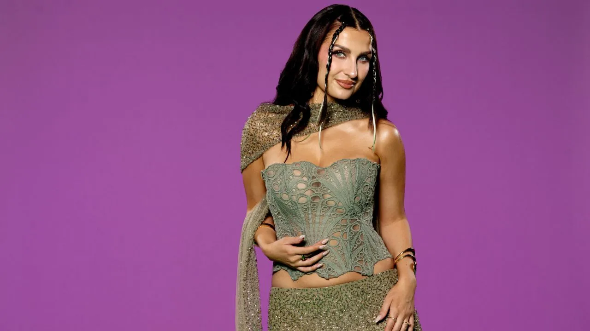
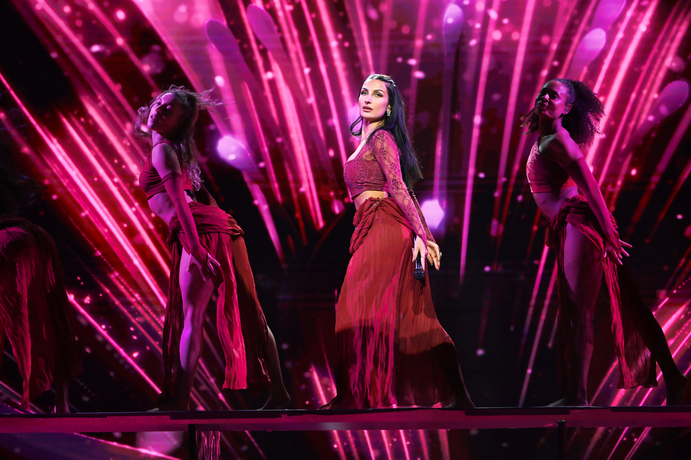
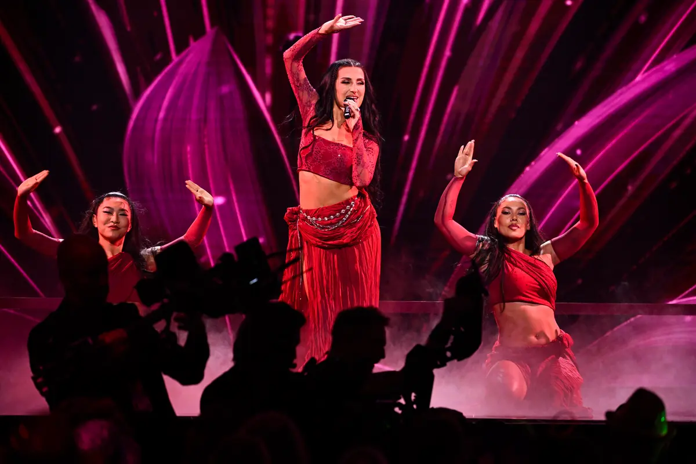

İlk dinleyişte “MAZAA” fazlasıyla kolay çözülebilen bir pop şarkısı gibi davranıyor. Gecelik bir çekim, bir yaz beat’i, iki pop yıldızı, gün doğana kadar devam etme vaadi ve birkaç saniyede ezberlenen tek bir kelime. Fakat o kelimenin nereden geldiğini sormaya başladığınız anda şarkının arkasındaki dünya genişliyor.
Bir tarafta Afganistan’da doğup İsveç’te büyüyen, sonra 19 yaşında tek başına Hindistan’a taşınıp beş yıl Bollywood sektöründe yaşayan Meira Omar var. Diğer tarafta Swedish Idol zaferinden dört Melodifestivalen finaline uzanan, yaklaşık on yıldır İsveç popunun merkezinde dolaşan LIAMOO. Aralarında ise İsveç pop endüstrisinin tanıdık isimleri beliriyor: Marcus Svedin, Linnea Deb ve Paul Rey. Ve bütün bunlar, görsel dünyasını Stockholm’de değil Kapadokya’da kuran bir müzik videosunda birleşiyor.
Meira Omar’ın kültürel hafızası.
“MAZAA”nın ayırt edici tarafı bu iki şeyi birbirinden ayırmaması: prodüksiyon disiplini İsveç’e, dilsel ve melodik kodların önemli bölümü Meira’nın kişisel yolculuğuna ait.
01THE RELEASEÖnce şarkı: “MAZAA” ne demek?
“MAZAA”, 29 Mayıs 2026’da yayımlandı ve 2 dakika 56 saniye sürüyor. Yayın Emperial AB kataloğunda; dağıtım ağı Warner Music Sweden çevresinde. Resmî müzik videosu ise bir gün önce, 28 Mayıs’ta, Emperial kanalında yayımlandı. Yönetmenlik, görüntü yönetimi ve kurgu Kristoffer Jansson imzalı.
Şarkının adı ise bütün yapının kilit kelimesi. Maza / mazaa, Hintçe ve Urduca kullanımda tek bir Türkçe karşılığa kolayca sıkışmıyor; Farsça kökenli sözcük, keyif, haz, zevk, eğlence ve hoşlanma arasında dolaşan bir anlam alanına sahip. Bu yüzden nakarattaki “ma-ma-mazaa”, yalnızca “eğlence” değil; anın verdiği bedensel ve duygusal keyfi de taşıyor.
Şarkının söz dünyası da tam bu eksende. Gece, fiziksel çekim, birbirine bakma, dokunma, “body to body” yakınlık ve gün doğana kadar o anı uzatma isteği. Hikâye ağır bir romantik dram değil; anlık haz ve çekim. Meira’nın bu başlığı neden seçtiğini açıklayan doğrudan bir röportaj bulunmuyor, fakat kelimeyi onun yaşam öyküsünden koparmak da zor.
02MEIRA OMARKabil’den Botkyrka’ya, oradan Bombay’a
Meira Omar 17 Haziran 1993’te Kabil’de doğdu. Çocuk yaşta ailesiyle Afganistan’dan kaçarak İsveç’e geldi ve Stockholm’ün güneybatısındaki Botkyrka’da büyüdü. Annesi Rus, babası Afgan. Meira daha sonra farklı kültürler arasında büyümenin kimlik duygusunu uzun süre sorgulamasına neden olduğunu, zamanla bunun müziğinin doğal malzemesine dönüştüğünü anlatacaktı.
Liseden sonra birkaç ay çalışıp para biriktirdi ve 19 yaşında tek başına Hindistan’a taşındı. Çocukluğundan beri Bollywood yıldızı olma hayali vardı; Afganistan’da Bollywood filmleriyle büyümüştü. Hindistan’da yaklaşık beş yıl kaldı ve Hintçe öğrendi.
Bazı dönemlerde günde yedi-sekiz casting’e gidiyordu. Küçük roller oynadı, müzikallerde ve tiyatroda çalıştı, bazı film projelerinde yer aldı ve Bollywood yapımları için çok sayıda voice-over / dublaj işi yaptı. Kendisi özellikle bir yanlış anlaşılmayı da düzeltiyor: Hindistan’da “büyük Bollywood yıldızı” değildi; beş yıl boyunca sektörün içinde çalışan ve sürekli audition’a giren genç bir performer’dı.

02 / PORTRAITİsveç’e döndüğünde Bollywood esintili dans videolarıyla çevrimiçi görünürlük kazandı; SVT bazı videolarının 10 milyonun çok üzerinde görüntülenmeye ulaştığını belirtiyor. Ardından 2024’te Netflix’in Love Is Blind: Sverige programına katıldı ve Oskar Nordstrand’la tanışıp evlendi. Müzik kariyerinin büyük çıkışından önce İsveç genelinde tanınan bir televizyon yüzüne dönüşmüştü.
03THE BREAKTHROUGH“Hush Hush”, “Dooset Daram” ve Meira formülünün doğuşu
Meira, Melodifestivalen 2025’e “Hush Hush” ile katıldı. Şarkının yazarları Laurell Barker, Dino Medanhodzic, Meira Omar ve Anderz Wrethov’du. Finalde 10’uncu oldu; fakat yarışma sonucu gerçek ticari hikâyeyi anlatmadı. Parça daha sonra hem Svensktoppen’in hem İsveç Spotify listesinin zirvesine çıktı, platin sertifika aldı ve Sverigetopplistan’da #3 seviyesine ulaştı. Araştırma sırasındaki Spotify snapshot’ı yaklaşık 15,25 milyon stream gösteriyordu.
2026’da bu kez “Dooset Daram” ile döndü. Laurell Barker, Meira Omar, Jimmy “Joker” Thörnfeldt ve Anderz Wrethov ortak yazarlığındaki şarkı Finalkval üzerinden finale çıktı ve finalde 9’uncu oldu. SVT, kendi deltävling’inde Meira’nın 1.871.640 oy aldığını da kaydediyor. “Dooset daram” Farsçada “seni seviyorum” anlamına geliyor; Meira şarkıyı eşi Oskar Nordstrand’a bir aşk ilanı olarak anlattı. Parça Sverigetopplistan’da #5 seviyesine çıktı ve araştırma sırasındaki Spotify snapshot’ında yaklaşık 6,95 milyon stream görünüyordu.
Böylece “MAZAA” yayımlandığında Meira artık yalnızca bir reality-TV yüzü değildi. İki Mello finali, bir platin hit, milyonlarca stream ve giderek netleşen bir pop kimliği vardı: İsveç pop mühendisliği + Afgan/Fars/Güney Asya kodları + güçlü styling + kolay hatırlanan hook.
2026 yazında kamu profilinin başka bir katmanı da görünür oldu. RESCUE / International Rescue Committee, Meira’yı elçi olarak tanıttı; Meira özellikle Afganistan’daki kadın ve kız çocuklarının eğitim, sağlık ve özgürlük haklarını öne çıkarıyor. 25 Ağustos 2026 tarihli duyuru bu rolü resmileştirdi.
04LIAMOOIdol zaferinden dört Mello finaline
LIAMOO’nun gerçek adı Per Liam Pablito Cacatian Thomassen. 10 Eylül 1997 doğumlu; Göteborg’da büyüdü ve ailesel kökenlerinde İsveç, Norveç, Finlandiya ve Filipinler bulunuyor. Büyük çıkışı, henüz 19 yaşındayken Swedish Idol 2016’yı kazanmasıyla geldi. Yarışmada hem vokal hem rap kullanmasıyla dikkat çekti; ardından “Playing With Fire” ile profesyonel kariyerine geçti.
Melodifestivalen onun kariyerinde neredeyse ayrı bir ana damar. 2018’de “Last Breath” ile 6’ncı, 2019’da Hanna Ferm’le “Hold You” ile 3’üncü, 2022’de “Bluffin” ile 4’üncü, 2024’te “Dragon” ile 5’inci oldu. Kendi adıyla katıldığı dört yarışmanın dördünde de finale çıktı.
LIAMOO yalnızca performer değil, songwriter olarak da Mello ağının içinde. 2023’te Paul Rey’in “Royals” şarkısını Dino Medanhodzic, Paul Rey ve Jimmy “Joker” Thörnfeldt ile birlikte yazdı; parça finalde 7’nci oldu. 2025’te ise Andreas Lundstedt’in “Vicious” kaydının yazarlarından biriydi; bu kez şarkı final göremedi.
En büyük streaming başarılarından biri ise Mello dışından geliyor. John de Sohn ile yaptığı “Forever Young” yaklaşık 147,3 milyon Spotify stream seviyesindeydi. LIAMOO’nun aylık Spotify dinleyicisi araştırma sırasında yaklaşık 338 bin görünüyordu. “MAZAA”dan sonra da üretim sürdü: Apple Music, 28 Ağustos 2026 tarihli “Caught In The Game”i yeni single olarak listeliyor.
05THE CREDITS“MAZAA”nın arkasında tek bir gizli isim yok; bir ekip var
İlk bakışta Paul Rey bağlantısı dikkat çekiyor; fakat resmî Topic metadata’sı yaratıcı ekibin daha geniş olduğunu gösteriyor. “MAZAA”nın prodüktörü Marcus Svedin. Besteci kadrosunda ise Marcus Svedin, Linnea Deb, Paul Rey, Meira Omar ve LIAMOO bulunuyor.
Prodüksiyonun ana ismi; aynı zamanda ortak besteci.
İsveç Eurovision / Melodifestivalen yazarlık çevresinin uzun süredir merkezindeki isimlerden.
LIAMOO ile “Royals” üzerinden daha önce kurulmuş bir yaratıcı bağlantı.
Düetin iki sanatçısı da yazarlık kadrosunda.
Bu kredi dizilimi İsveç popu için küçük bir aile ağacı gibi. LIAMOO ile Paul Rey zaten “Royals”ta birlikte yazmıştı. Linnea Deb uzun süredir Eurovision/Mello üretim sisteminin merkezindeki songwriter’lardan biri. Marcus Svedin ise burada hem ortak besteci hem de prodüktör. Dolayısıyla “MAZAA”yı yalnızca label’ın iki sanatçıyı yan yana getirmesi gibi okumak eksik kalıyor; arka planda birbirini zaten tanıyan bir üretim ekosistemi var.
06THE LABELEmperial zaten ikisini komşu yapmıştı
Meira ve LIAMOO label tarafında da birbirine uzak değildi. “Hush Hush” ve “Dooset Daram” Emperial AB / Warner Music Sweden dağıtımı altında çıktı. LIAMOO’nun yakın dönem “Hey DJ”, “Before The Night Is Over”, “Break Through The Ceiling” ve “Side Effects” gibi kayıtları da Emperial çevresinde yer alıyor.
Böylece düetin arkasında üç ayrı bağlantı noktası oluşuyor: aynı label çevresi, aynı Melodifestivalen ekosistemi ve ortak songwriter ilişkileri. “MAZAA” bu yüzden rastlantısal bir collaboration değil; İsveç pop sisteminin içinde oldukça doğal bir buluşma.
07THE VIDEOSonra ekip Kapadokya’ya gidiyor
“MAZAA” klibi Kapadokya’da çekildi. Bu bilgi videoyu yeniden izlediğinizde neredeyse her şeyi yerine oturtuyor. Meira’nın akışkan beyaz kostümü, LIAMOO’nun açık tonları ve çevrelerindeki açık kahverengi kaya kütleleri artık soyut bir “desert aesthetic” değil; Orta Anadolu’nun volkanik coğrafyasının parçası.


Kapadokya’nın volkanik tüf tabakaları, vadileri ve peri bacaları zaten son derece güçlü bir sinematografik yüzeye sahip. “MAZAA” açısından seçim ayrıca anlamlı: İsveç’te üretilmiş bir pop kaydı, Farsça kökenli ve Hintçe-Urduca dolaşıma sahip bir başlık, Afganistan doğumlu ve beş yıl Hindistan’da yaşamış bir kadın sanatçı, çok-kültürlü aile köklerine sahip İsveçli bir erkek popçu ve görsel karşılık olarak Kapadokya.
Scandipop’un LIAMOO’yu bu kayıtta “Meira’nın dünyasına davet edilmiş” gibi okuması da burada anlam kazanıyor. Ortak artist credit’e rağmen estetik merkez Meira’ya daha yakın: kelime seçimi onun geçmişine, vokal süslemeleri onun repertuvarına, styling ve coğrafi seçim ise onun kurduğu kültürel pop dünyasına bağlanıyor. LIAMOO bu evrene daha klasik Scandinavian dance-pop erişilebilirliği getiriyor.
08THE SOUNDMüziğin matematiği ve sözlerin sadeliği
Tempo analizleri birbirine oldukça yakın: yaklaşık 120–123 BPM. Tonalite konusunda ise otomatik servisler anlaşamıyor. Chordify E♭ minor, AudioAtlas D♯ minor, SongBPM ise D♭ major sonucunu veriyor. Bu nedenle tek bir kesin tonalite iddiası yerine, otomatik analizlerin burada ayrıştığını not etmek daha sağlıklı.
Kulağa gelen yapı daha net: Scandinavian dance-pop ritim disiplini, Doğu çağrışımlı melodik kıvrımlar, vokal ornamentasyonu ve hızla ezberlenen sözcüksüz hook’lar. Başka bir deyişle prodüksiyon dili İsveç, aksan Meira.
THE FORMULAHikâye basit. Kimlik sesin içinde.
Sözler “Hush Hush” ya da “Dooset Daram” kadar kimlik anlatan bir metin değil. Gece, karşılıklı bakış, dokunma, bedensel yakınlık ve güneş doğmadan önce ânı uzatma fikri etrafında dönüyor. Bu nedenle özgünlük sözlerin karmaşıklığından değil, ses ve kültürel kodlardan geliyor. “Mazaa” kelimesini, vokal ornamentasyonunu ve Meira’nın görsel dünyasını çıkarırsanız geriye oldukça evrensel bir summer-pop flört şarkısı kalıyor.
09THE NUMBERSPeki gerçekten hit oldu mu?
Burada “popüler” ile “büyük hit” arasındaki farkı ayırmak gerekiyor. Spotify’ın Meira profilinde “MAZAA” son crawl’larda hâlâ üst sıralarda görünüyordu; ancak indekslenmiş stream snapshot’ları “Hush Hush” ve “Dooset Daram”la aynı ölçekte değil. Farklı tarihlerde “MAZAA” için yaklaşık 114 bin–163 bin bandında stream sayaçları görüldü. Buna karşılık “Hush Hush” yaklaşık 15,25 milyon, “Dooset Daram” yaklaşık 6,95 milyon seviyesindeydi.
Resmî video da araştırma sırasında yaklaşık 42.900 görüntülenme seviyesindeydi. İsveç’in resmî Sverigetopplistan indeksinde “MAZAA” için doğrulanabilir bir chart peak bulunamadı. Bu yüzden parçayı “Meira’nın üçüncü büyük İsveç hiti” diye tanımlamak doğru değil; daha doğru tarif, estetik olarak güçlü, katalog içinde görünürlüğü yüksek ama önceki Mello hitlerinin ölçeğine ulaşmamış bir yaz single’ı.
Emperial’ın 10 Haziran 2026’da yayımlanan “Fotbolls VM 2026 – De bästa låtarna för festen” derlemesinde şarkıyı üçüncü sıraya koyması da parçanın kullanım alanını özetliyor: yaz, parti, dans, kolay nakarat ve yüksek tekrar değeri.
10THE DISCOGRAPHYMeira’nın kariyerinde “MAZAA” nereye oturuyor?
Meira’nın kısa ama hızlı gelişen diskografisini kronolojik okuyunca parçanın görevi netleşiyor. “Dive” (2024) ilk giriş. “Hush Hush” (2025) büyük formülün keşfi. “Meri Jaan” (2025) Güney Asya tarafının devamı. “Dooset Daram” (2026) Farsça kimliğin daha açık biçimde merkeze gelişi. Ardından “MAZAA”: aynı kültürel-pop kimliğinin ilk kez belirgin bir erkek düet partneriyle ve daha doğrudan club/summer-pop formatında denenmesi.
Bu nedenle “MAZAA” kariyerin en büyük şarkısı olmayabilir ama Meira Omar’ın nasıl bir pop yıldızı olmak istediğini çok açık biçimde gösteriyor. İsveç pop altyapısından vazgeçmiyor; onu kendi yaşam öyküsünden gelen dil, dans, kostüm, melodik süsleme ve coğrafi işaretlerle dönüştürüyor.
11THE MELLO DNAYarışma şarkısı değil, ama her tarafında Mello var
“MAZAA” bir Melodifestivalen şarkısı değil. Fakat kaydın neredeyse her tarafında yarışmanın yaratıcı ekosisteminin izi var. Meira 2025 ve 2026 finalisti. LIAMOO dört kez kendi adıyla finalist. Paul Rey hem Mello artisti hem songwriter. Linnea Deb İsveç Eurovision/Mello üretim sisteminin uzun süredir merkezindeki isimlerden. LIAMOO ile Paul Rey zaten “Royals”ta ortak.
İsveç popunun sürekliliği de biraz burada yatıyor: aynı insanlar farklı rollerde tekrar tekrar birbirleriyle çalışıyor. Bir yıl artist, ertesi yıl songwriter, sonra label komşusu, sonra düet partneri, sonra başka birinin bestecisi. İsimler çok değişmiyor; kombinasyonlar değişiyor.
12THE LAST WORD“MAZAA”nın asıl hikâyesi
Üç dakikadan kısa bir pop şarkısının içine şaşırtıcı miktarda yol sığmış durumda: Kabil, Botkyrka, Bombay, Göteborg, Melodifestivalen, Swedish Idol, Love Is Blind, Paul Rey, Linnea Deb, Marcus Svedin, Emperial, Warner Music Sweden ve Kapadokya.
Meira Omar’ın kariyeri zaten kültürler arasında hareket etmek üzerine kurulmuş durumda. Afganistan’da doğuyor, İsveç’te büyüyor, Hindistan’da profesyonel olarak şekilleniyor, İsveç pop endüstrisine giriyor ve bütün bu deneyimleri küçük dilsel, melodik ve görsel işaretlerle müziğine taşıyor. LIAMOO ise başka bir şeyi temsil ediyor: İsveç pop sisteminin sürekliliğini. Idol, Mello, songwriting, streaming hitleri ve aynı label çevresi.
Sonuç iki dünyanın yarı yarıya birleşmesi değil. LIAMOO, “MAZAA”da Meira’yı kendi dünyasına çekmiyor; o, Meira’nın dünyasına giriyor. Ve şarkı 2 dakika 56 saniye boyunca “İsveç popu mu, Güney Asya etkili pop mu?” diye seçim yapmak zorunda kalmıyor. İkisi aynı anda var olabiliyor.
“MAZAA”nın zevki de zaten biraz burada.
Yazan ISC Editorial · Yayın: 18 Eylül 2026
Kaynakça & Further Reading 17 kaynak · tıklayarak aç / kapat
- Emperial / YouTube — “MAZAA” Official Music VideoVideo tarihi, Kristoffer Jansson yönetmenlik/çekim/kurgu kredileri, resmî sözler ve video snapshot’ı.
- Meira Omar – Topic / Emperial — “MAZAA”Marcus Svedin, Linnea Deb, Paul Rey, Meira Omar ve LIAMOO yaratıcı kredileri; Marcus Svedin prodüksiyonu.
- Hindwi Dictionary — “mazaa”Kelimenin Farsça kökeni ile haz, keyif, zevk ve eğlence anlam alanı.
- SVT Mellopedia — Meira OmarKabil doğumu, Botkyrka geçmişi, kariyer ve Melodifestivalen kayıtları.
- Aftonbladet — Meira Omar & Bollywood19 yaşında Hindistan’a taşınması, beş yıl kalması, casting, tiyatro, müzikal, film ve voice-over işleri.
- New Indian Express — Meira Omar profileRus anne / Afgan baba, çok-kültürlü kimlik ve müziğe etkisi.
- SVT Mellopedia — “Hush Hush”2025 yazar kadrosu, final sonucu ve yarışma sonrası başarı bilgileri.
- SVT Mellopedia — “Dooset Daram”2026 yazar kadrosu, Finalkval, oy sayısı, final sonucu ve Farsça başlık bilgisi.
- RESCUE / International Rescue Committee — Meira OmarElçilik rolü ve Afganistan’daki kadın ve kız çocuklarının haklarına yönelik odağı.
- SVT Mellopedia — LIAMOOTam adı, doğum ve köken bilgileri, Idol zaferi, Mello kariyeri ve “Vicious” düzeltmesi.
- SVT Mellopedia — “Royals”LIAMOO–Paul Rey–Dino Medanhodzic–Jimmy “Joker” Thörnfeldt ortak yazarlığı ve 2023 final sonucu.
- Spotify — LIAMOO / “Forever Young”Araştırma sırasında görülen yaklaşık 147,3 milyon stream ölçeği.
- Apple Music — LIAMOO28 Ağustos 2026 tarihli “Caught In The Game” dahil güncel katalog bağlamı.
- Scandipop — Meira Omar & LIAMOO, “MAZAA”LIAMOO’nun Meira’nın müzikal dünyasına davet edildiğine dair eleştirel okuma.
- Chordify — “MAZAA”Tempo ve tonalite analizlerinden biri; diğer otomatik servislerle birlikte karşılaştırmalı kullanıldı.
- GoTürkiye — CappadociaKapadokya’nın volkanik tüf, vadiler ve peri bacalarından oluşan coğrafi arka planı.
- Spotify — Fotbolls VM 2026 party compilation“MAZAA”nın Emperial’ın 2026 Dünya Kupası parti derlemesindeki konumu.
Editoryal not: Spotify stream ve aylık dinleyici sayıları farklı tarihlerde taranmış web snapshot’larıdır; canlı sayaç olarak okunmamalıdır. Otomatik müzik analiz servisleri tonalite konusunda birbirleriyle çeliştiği için tek bir kesin key iddiası kullanılmadı. “MAZAA” yaratıcı kredilerinde resmî YouTube Topic metadata’sı esas alındı. Klip lokasyonu Kapadokya’dır.